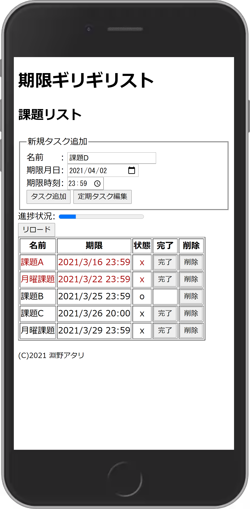
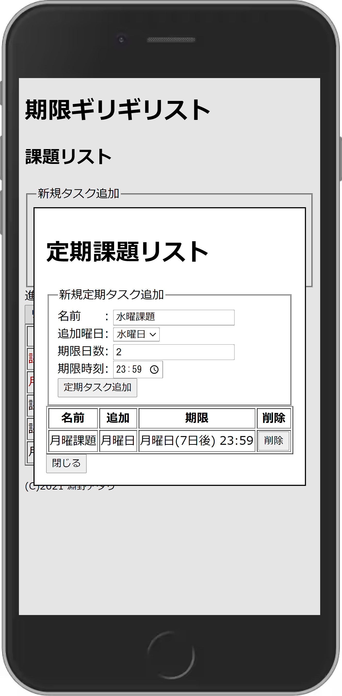

大学の課題を管理するためのタスク管理アプリを作りました。

課題管理という目的に特化するために次の機能を盛り込んでいます。
- タスクが期限でソートされる。
- タスク完了の際にツイートを促す。
- 期限を過ぎている未完了タスクは赤く表示される。
- 期限を過ぎた完了済タスクは自動で消える。
- 定期課題リストに登録したタスクはその曜日に自動でタスクリストに追加される。

タスクアプリは入門として作る人が多く、その数自体が多い。
だが定期的なタスクを自動で追加する機能を持っているものは発見できなかった。
動作やデザインはメモ帳アプリで課題を管理していた時のものをベースにした。